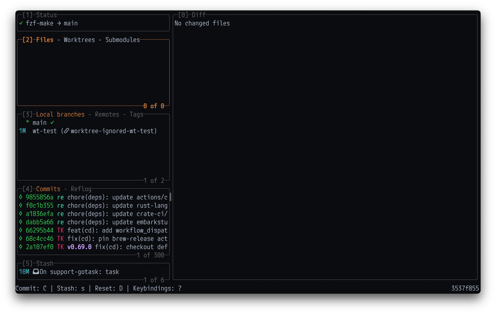
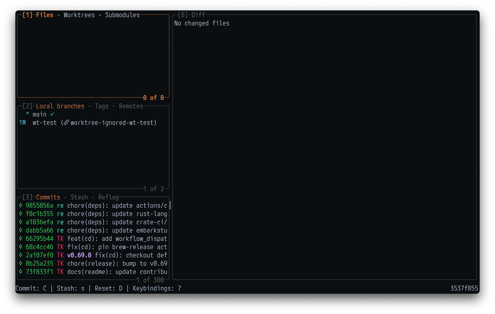
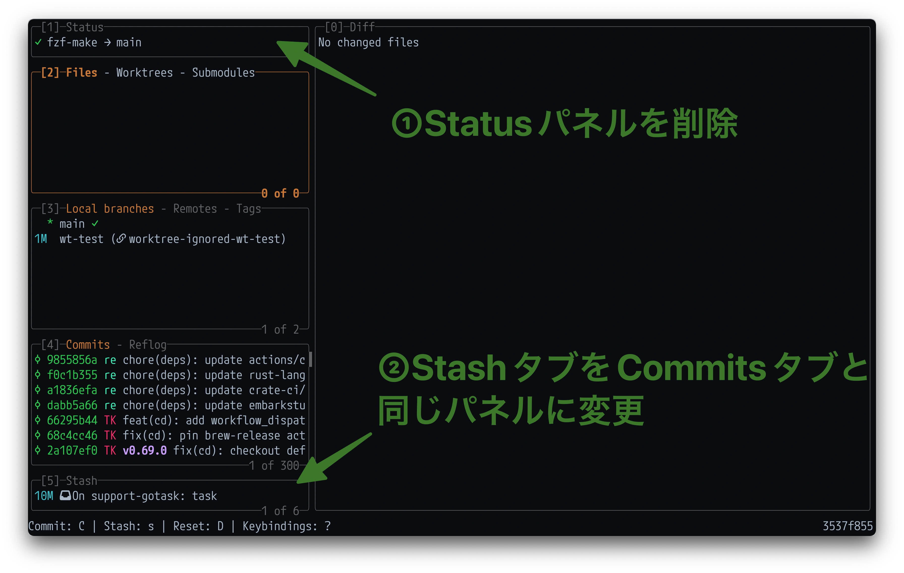

Lazygit v0.63.0でサイドパネルの配置が変更できるようになった

日本時間の2026/07/04にリリースされたv0.63.0から、Lazygitのサイドパネルの配置が設定可能になった。
この機能は現在の主要なLazygitメンテナである@stefanhaller1によって以下のPRで実装された。
変更点#
以下のような設定項目が追加され、自由にサイドパネルの配置を変更できるようになった。(以下はdefaultの設定)
gui:
sidePanels:
- [status]
- [files, worktrees, submodules]
- [branches, remotes, tags]
- [commits, reflog]
- [stash]
PR Bodyに
You can:
- Reorder the panels
- Hide panels you don’t use
- Regroup which panels share a slot as tabs
- Promote a tab to its own top-level panel — e.g. pull Worktrees out of the Files panel so it’s always visible
とあるように、
- パネルの並び替え
- 不要なパネルの非表示
- どのパネルをどのタブにグルーピングするか
- タブをトップレベルパネルに昇格させる(e.g. WorktreesをFilesパネルから引き出して常に表示する)
といったことができるようになった。
設定例#
自分の場合、変更前はこんな感じで、

いくつか設定を試した結果、以下のような感じに落ち着いた。

主な変更点は以下。
- Statusを非表示に
- StashタブをCommitsと同じパネルに移動

というわけで表示領域が若干広くなった。(こう見ると割と地味ではある)
設定は以下。
gui:
sidePanels:
- [files, worktrees, submodules]
- [branches, tags, remotes]
- [commits, stash, reflog]
# 以下はdefault設定
# - [status]
# - [files, worktrees, submodules]
# - [branches, remotes, tags]
# - [commits, reflog]
# - [stash]
まとめ#
サイドパネルを自分好みにカスタマイズできると地味に捗るのでオススメです。
-
2025/07に@jesseduffieldがメンテナンスの主導権を@stefanhallerに譲る、という主旨のことが投稿された。 https://github.com/jesseduffield/lazygit/issues/4655#issue-3164810345 ↩︎
Read other posts